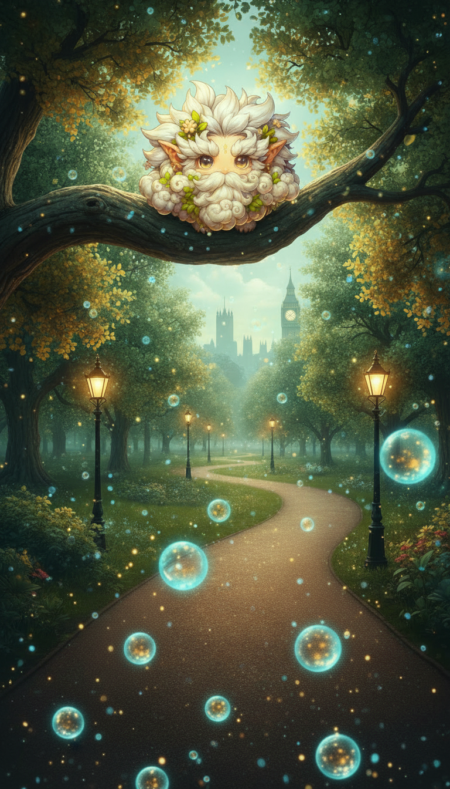
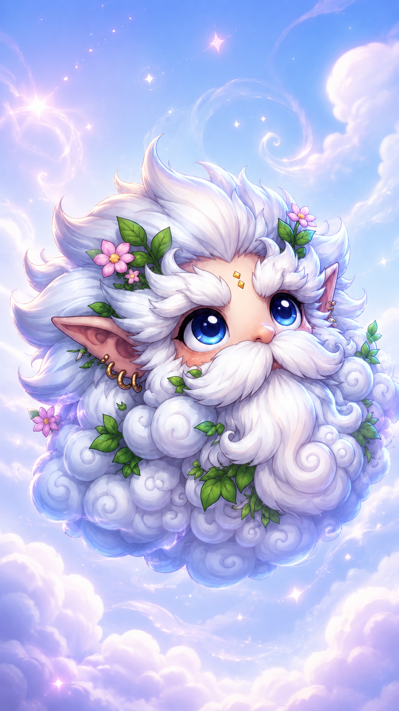

Lintels
Summary
Cloud-like ethereal creatures born from the fusion of holy radiation and atmospheric pollution following the Holy Tragedy
Description
In the world of Silver Clouds, Lintels are unique ethereal creatures that embody the duality of nature and magic. Born from a blend of holy radiation and residual pollution, they represent both celestial purity and the scars of mortal industry. This paradoxical nature makes them symbols of balance and resilience in the ever-evolving tapestry of the world.
Origins and Nature
Lintels are believed to have originated from the aftermath of the great celestial tragedy—the Holy Tragedy—that tore at the fabric of the universe. When the ancient astral being fell from the sky, its cosmic fragments released holy radiation that mingled with the atmospheric pollution of the mortal realm. Over time, this fusion of divine energy and earthly residue gave rise to the Lintels.
Physical Appearance
Lintels appear as delicate, cloud-like entities floating through the sky. Their forms are ever-shifting, composed of translucent, wispy tendrils that glow with an inner light. Up close, they reveal intricate patterns and glowing veins of holy radiation intertwined with dark, swirling streaks of pollution. This contrast gives them a mesmerising, otherworldly appearance, with colours ranging from shimmering silver and ethereal whites to shiny pinks and muted pastels.
Behaviour and Temperament
Lintels are serene, gentle creatures known for their calming presence. They drift aimlessly through the skies, drawn to areas where natural magic is strong. Their existence is a testament to the resilience and adaptability of nature, thriving despite their polluted origins. Despite their immense latent power, Lintels are peaceful beings who avoid conflict, using their abilities for healing and restoration rather than destruction.
Cultural Significance
Lintels hold a special place in the mythology and culture of Silver Clouds. Encountering a Lintel during a journey is considered a sign of divine protection, with many believing they guide travellers towards their destinies and shield them from harm. When Lintels appear in large numbers, they are believed to foreshadow significant events or changes—a belief that evokes both awe and apprehension among witnesses.
Interaction with Other Beings
Lintels are generally passive, avoiding direct interaction with other beings. However, their presence is especially notable around individuals with strong magical auras or those attuned to nature. A special bond exists between Lintels and various sprite breeds, particularly canopy and cloudian sprites, who often ride on Lintels to traverse long distances swiftly and safely. Wielders of Holy Items find Lintels to be powerful allies, as the cosmic connection between them allows wielders to amplify their artefacts' power by drawing on the Lintels' energy.
Abilities
- Weather Manipulation
- Magic Amplification
- Healing Aura
Gallery



Discover where your allegiance lies in the world of Silver Clouds.
Take the Faction Assessment